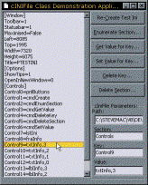

cIniFile Class (2K)
cIniFile Class (2K)
 cIniFile Demonstration Application (25K)
cIniFile Demonstration Application (25K)
 15 Jun 1998
15 Jun 1998
First Posted

Easy INI File Access
The cIniFile class is an easy, self-contained way to get complete access to INI files. Although use of INI files is no longer recommended under Windows (you should use the registry instead - see my Registry class for an easy migration from this method of using Ini files to using the registry) they are ultra simple to use. They also make it simpler to ship your application.
The class allows you to create, enumerate and delete sections and keys within an INI file, without restriction. Enumerating keys and sections in an INI file is quite a handy technique, as it means you can create INI files with arbitrary sections and keys and interrogate them easily. See the cIniFile.cls code to see how you do it - its just a simple (but little known) mod to the VB API declaration for GetPrivateProfileString (thanks to Jonathan Hopkins for passing this information on).
Here is a brief summary of typical uses of the class:
To get Value from the Ini File
With m_cIni
.Path = App.Path & "\TEST.INI"
.Section = "Options"
.Key = "SavePath"
.Default = App.Path
sSavePath = .Value
If Not (.Success) Then
MsgBox "Failed to get value.", vbInformation
End If
End If
To Write a Value to the Ini file
With m_cIni
.Path = App.Path & "\TEST.INI"
.Section = "Options"
.Key = "SavePath"
.Default = App.Path
.Value = sSavePath
If Not (.Success) Then
MsgBox "Failed to save value.", vbInformation
End If
End If
To Get All the Sections within an Ini File
Dim sSections() As String
Dim iSectionCount As Long
With m_cIni
.EnumerateAllSections sSections(), iSectionCount
For iSection = 1 To iSectionCount
lstIni.AddItem "[" & sSections(iSection) & "]"
Next iSection
End With
To Get All the Keys within a section of an Ini File
Dim sKeys() As String
Dim iKeycount As Long
.Section = "Options"
.EnumerateCurrentSection sKeys(), iKeycount
For iKey = 1 To iKeycount
.Key = sKeys(iKey)
Debug.Print .Key & "=" & .Value
Next iKey
To Delete a Key from an INI file
With m_cIni
.Path = App.Path & "\TEST.INI"
.Section = "Options"
.Key = "SavePath"
.DeleteKey
If Not (.Success) Then
MsgBox "Delete Key Failed.", vbInformation
End If
End With
To Delete a Section from an INI file
With m_cIni
.Path = App.Path & "\TEST.INI"
.Section = "Options"
.DeleteSection
If Not (.Success) Then
MsgBox "Delete Section Failed.", vbInformation
End If
End With